<<2016年9月 | トップページ | 2016年11月>>
2016年10月
○○にありがとう［瀧澤翼］
こんにちは！
最近、寒くなってきましたね～。
瀧澤翼です。
今回のテーマは、
「 〇〇にありがとう 」かぁ～。
１年前くらいにブログで紹介したひいおばあちゃんですが、
今年２月に亡くなってしまいました。
ちょうど100歳でした。
ひいおばあちゃんとの思い出はたくさんあります。
一緒にテレビを見たり、散歩したり、
とても面白くユーモアのあるおばあちゃんでした。
と言うわけで今回の僕のテーマは、
『 ひいおばあちゃんにありがとう 』です。
ひいおばあちゃんがいなかったら
僕という存在もいなかったので、本当に大切な人です！
お別れしたのは悲しいけれど、
ひいおばあちゃんから教わったことはたくさんあります。
何よりも人を楽しませることを教えてくれました！
こんな写真が出てきました！
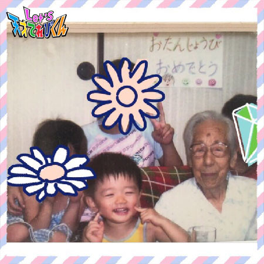
ひ孫は全員で９人もいます！
その内の４人のひ孫とひいおばあちゃんとの写真。
ってか、僕、小っちゃ笑笑
こんな笑顔をくれたのも僕のひいおばあちゃんです！
テレビをとおして、
てれび戦士の僕を応援してくれたひいおばあちゃんありがとう！！
Let's！！！
投稿者:瀧澤翼 | 投稿時間:18時45分 | カテゴリ：てれび戦士 | 固定リンク
○○にありがとう［胡内奏芽］
こんにちは！
胡内です。
今回のテーマは「 ○○にありがとう 」です。
ありがとうって、毎日すごく使う言葉ですよね！！
お母さんに、お父さんに、先生に、お友達に、
近所の人に、お店の人に、本当によく使うなーって思うんです。
だから、なにを書いたら良いか、すごい迷っちゃいますが。
んー、
ぼくのありがとうは、、、
「 てれび戦士の仲間 」！！！
てれび戦士になってから、
ぼくは地球を守れるか、どちゃもんと仲間になれるか心配だったけど、
てれび戦士の仲間がいるから、頑張れる！と、
本気で思います。
いつも、いろいろ教えてくれありがとう！
いつも、たくさん励ましてくれてありがとう！
いつも、いつも、本当にありがとう！
あっ！大野課長も虎南分析官も、
いつもいろいろ指示を出してくれてありがとうございます (*^^*)
これからも、みんなと一緒に地球を守って行きます！！！！！
それでは
レーッツ！！
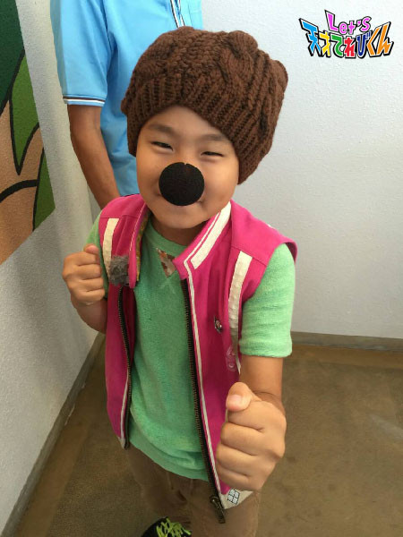
投稿者:胡内奏芽 | 投稿時間:18時45分 | カテゴリ：てれび戦士 | 固定リンク
○○にありがとう［林武尊］
こんにちは、林武尊です。
秋ですね～
秋といえば・・・
食欲の秋、スポーツの秋、そしてそして・・・
読書の秋！
この前、おしゃれな本屋さんに行きました。
とっても広くて、緑がたくさんあって、
ゆったりと座って本を読むスペースもあって、すごくきれい！
こんな本屋さんはじめてだ～。
ゆっくり楽しんできました (*^^)v
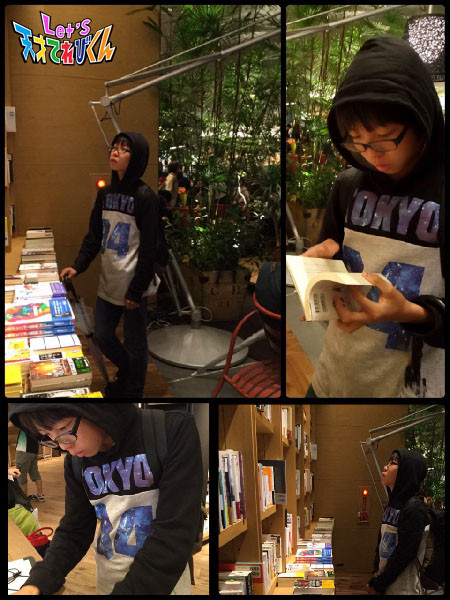
さてさて、今回のお題は・・・
「 ○○にありがとう 」！
僕は、いつも僕を見守ってくれている、家族みんなにありがとう！です。
まずは、お母さん。
お母さんは、家事や食事を気遣ってくれるし、
仕事も頑張ってくれています。
いつもは言えないけど、本当は、とっても感謝しています。
それからおばあちゃん。
おばあちゃんは、岡山のおいしいお肉をいつも送ってくれるし、
会うと必ず、漫画を買ってくれたり、お小遣いをくれたり、
すご～く優しいです。
それからおじいちゃん。
おじいちゃんは、物知りで僕の知らない昔のこととか、
いろんなことを教えてくれます。
習字もとっても上手で、冬休みの宿題の書初めは、
必ず教えてくれます。
なかなかおじいちゃんのように上手くは書けないけど、
とってもありがたいです。
僕は、家族のみんなに支えてもらってるんだな～って、
ありがとうの気持ちでいっぱいです。
ではまた～
投稿者:林武尊 | 投稿時間:18時54分 | カテゴリ：てれび戦士 | 固定リンク
○○にありがとう［辻晴仁］
こんにちは、つじはるとです (*^^*)ｖ
10月の３連休に、いとこといっしょに
スケートに行ってきました。
すい～～すい～～～ コケッッ！！！
すっごく楽しかったよ♪
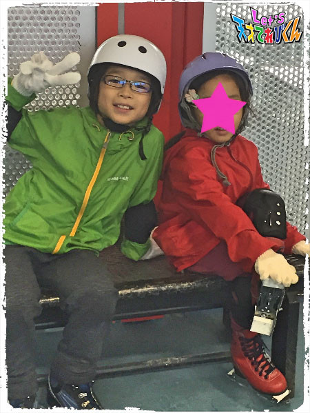
・・・・・・・・・・・・・・・
さて、今回のテーマは、
「 ◯◯にありがとう 」
ぼくは、ぼくのことを大切にしてくれる
お父さん、お母さん、おじいちゃん、おばあちゃんに
「 ありがとう 」を伝えたいです。
ぼくは小さいころ、
よく泣いて、手のかかる子どもだったみたいです。
そんなぼくを大切にやさしく育ててくれたみんなに
いつもかんしゃしています。
お父さんは、
おやすみの日になると、つかれているときでも、
虫採りに連れて行ってくれたり、
本気のおにごっこをしてくれて、
がんばってぼくを楽しませてくれます。
お母さんは、まだ小さなころから、
ぼくの意見をちゃんと聞いてくれて、
ぼくのことを一人前にあつかってくれました。
おじいちゃんは、しょうぎのコツを教えてくれたり
魚をさばいて、ぼくの大好物のおさしみを
作ってくれたりします。
おばあちゃんは、いてくれるだけでホンワカして
おちつけるから大好きです。
そして、ぼくが一番思うのは、
だれが一人欠けても
このぼくはそんざいしないんだーっていうことです。
このきせきを思うと、
すごいなあって気持ちでいっぱいになって、
むねがとってもあたたかくなります。
みんな、ありがとう (*^ ^*)♪
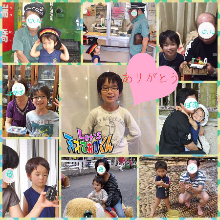
投稿者:辻晴仁 | 投稿時間:18時45分 | カテゴリ：てれび戦士 | 固定リンク
○○にありがとう［飯島緋梨］
こんにちは
飯島緋梨です！
もう秋ですね (^^)
10月は学校で合唱コンクールがあります
私のクラスの課題曲は
＊＊夏の日の贈りもの＊＊
自由曲は
＊＊明日へ＊＊
ソプラノとアルトに分かれて特訓中！
緋梨はもちろんアルト！
みんなで一丸となって練習するのは楽しいです (^^)
さてさて今回のお題は
｢ 〇〇にありがとう ｣です！
〇〇に入る言葉はたくさんあるけれど
その中でも特にありがとうなのが・・・
飼い猫の【 にゃう 】
家に帰ると必ずにゃうが玄関まで迎えにきてくれて、甘えてくるにゃう！
にゃうがいてくれるだけで癒されました。
実は去年、にゃうは天使になってしまいました。
緋梨が生まれる前から家にいたにゃう
18年間生きたにゃう
人間の年齢にすると88才のおじいちゃん
緋梨が落ち込んだり元気が出ないとき、
ずっとそばにいてくれた。
本当に本当にありがとう
もう、にゃうはいないのに
何故かそばにいる気がして
いつでも緋梨のことを見守っててくれる
これからも緋梨の心の中でずっと一緒だよ。
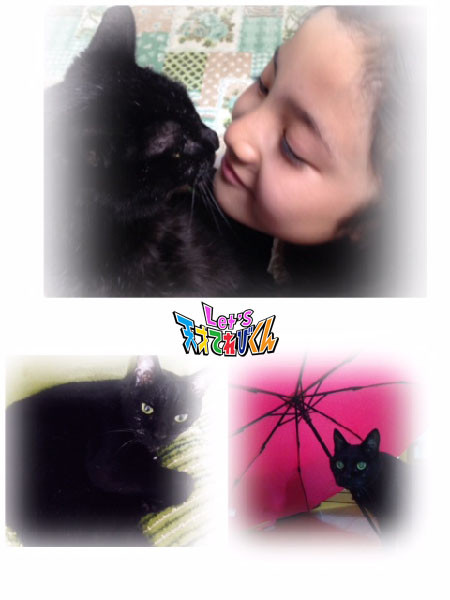
投稿者:飯島緋梨 | 投稿時間:18時45分 | カテゴリ：てれび戦士 | 固定リンク
「キスミーきれいみー」MVに超次元帝国清掃課地球係が登場！［超次元帝国清掃課地球係］
地球人のみなさ～ん。
超次元帝国のスーパーアイドル・ぱぺらぴ子ちゃんの
「 キスミーきれいみー 」のミュージック・ビデオに、
わたくしたち超次元帝国清掃課地球係の３人が登場よ！
ミュージック・ビデオは下記のサイトで見ることができるわよ！
キュートなダンスをご覧あれ。オーホホホホホホ～！
■NHKどーがステーション
http://www3.nhk.or.jp/d-station/episode/tvkun/6389/
■YouTube
https://youtu.be/loYkPeiJCvQ
※ＮＨＫサイトを離れます
■ニコニコ動画
http://www.nicovideo.jp/watch/1477023785
※ＮＨＫサイトを離れます
そうそう、今回もしばらくしたらGYAOでも見られるようになる予定よ～。
超次元帝国清掃課地球係 係長 松永天馬より
投稿者:超次元帝国清掃課地球係 | 投稿時間:19時00分 | カテゴリ：その他 | 固定リンク
○○にありがとう［久保みのり］
こんにちは( ´ ▽ ` )ﾉ
みのりです！！
食よくの秋、読書の秋、スポーツの秋を楽しんでいます。
夜ねているときに寒かったのであたたかいおふとんをだしてもらいました。
ふっかふかのおふとんでねるのは気持ちがいいんだよね～。
朝おふとんからでるのがつらいですT_T
＊.｡.:*・ﾟ ＊.｡.:*・ﾟ ＊.｡.:*・ﾟ ＊.｡.:*・ﾟ ＊.｡.
私がてれび戦士になってから、あっという間に半年がたちました。
最初のころにだーはらちゃんがとってくれた写真。
うれしかったなぁ^ ^
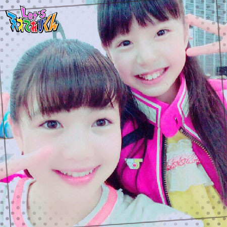
＊.｡.:*・ﾟ ＊.｡.:*・ﾟ ＊.｡.:*・ﾟ ＊.｡.:*・ﾟ ＊.｡.
今回のテーマは『 ○○にありがとう 』
私はくつが好きです。
天国にいるおじいちゃんも、くつをたくさん持っていて、
とても大切にしていたそうです。
くつといっても、いろんなくつがあって、
お出かけ用のくつ、学校へ行くときのくつ、
スニーカー、サンダル、スキーブーツ、、、。
私はまだ成長中なのでたくさんは持っていないけど、
「 オシャレは足元から！ 」って聞いたので、
キレイにはくように心がけています (^○^)
お父さんは、革（ かわ ）のくつをピカピカにみがいてくれます。
つやつやになって、新品みたいにかがやきます！
お母さんは、私が登校する前に「 転ばないでね。 」って
私のくつにおねがいしています。おまじないなんだって！
そして。
「 ステキなくつはステキな場所に連れて行ってくれる 」
という言葉をお母さんに教えてもらいました。
私は日本の47都道府県全部！それから外国にも行ってみたいな～。
美しいけしきやおいしい食べもの。
そのときのお気に入りのくつをはいて
たくさんのところにお出かけしたいです！
色んなことをして、いつも私のことを応えんしてくれていたおじいちゃんに
楽しいお話をしてあげたいです^ ^
おじいちゃんと私のくつは、私のお守りです。
いつもありがとう！
これからもよろしくね～ (^-^)/
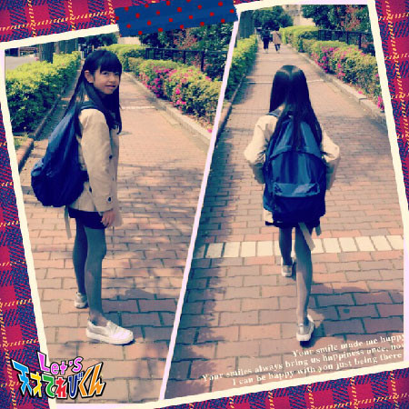
投稿者:久保みのり | 投稿時間:18時45分 | カテゴリ：てれび戦士 | 固定リンク
○○にありがとう［小澤竜心］
こんにちは！竜心です。
この前、中学校の見学に行きました。
勉強や制服、そして・・・部活動！！！
たいへんなこともあると思うけど、
楽しみだな～ ("⌒∇⌒")
この小学校生活６年間で 、
「 ありがとう！ 」を言いたい物があります。
それは『 ランドセル 』と『 リュックサック 』です。
ランドセルは、
雨の日も風の日も一緒に学校に通っている、
ぼくの、相棒です♪
いつも・・・ありがとう～～！
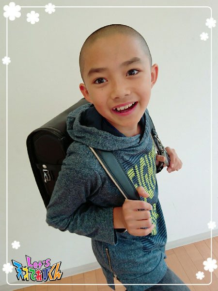
リュックサックは、１年生から使っていて、
遠足の時や、少林寺拳法やダンスの稽古（ けいこ ）に行くときに、
いつも一緒です。
ありがとう～～～！！
買ってもらったときすぐに、
目立つところに自分で名前を書きました。
それを見たお母さんは、
「 え！？こんなところに書いちゃったの！？ 」
と、ズッコケていました！！
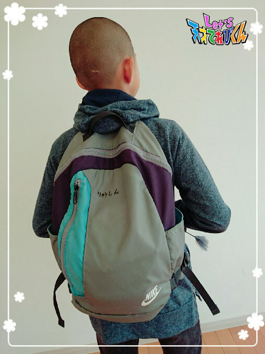
もう、ヒモがフサフサしてきて、
たま～に自然にチャックが開いちゃったりするけど、
まだまだ、使うぞ～ (*´ー｀*)
中学生になったら、
ランドセルとリュックサックとはお別れかな・・・。
これからも感謝して、
物を大切にしていきたいです d(⌒ー⌒)!
投稿者:小澤竜心 | 投稿時間:18時45分 | カテゴリ：てれび戦士 | 固定リンク
○○にありがとう［稲垣芽生］
こーんにーちはー
岐阜どちゃもん・うぎろうが助かった・・・よかった・・・
うぎろうと小沢さんの思い、愛、すごく良かったです。
うぎろうはなんで裏切られてもにくまなかったのか
考えました。
裏切られても
思いやりやお互いのきもちが強かったら
救われるんじゃないかな？と思います。
私は愛に感動しました！
そして今回のテーマは【 ○○にありがと う 】ですよ！
なので、愛や家族にありがとう、にしました。
夜、寝るとき、家族が「 産まれてきてくれてありがとう 」と言ってくれます。
それだけで私は幸せになります
愛してくれて、うれしくて、ありがとう。ってなります。
～この前、私が頭が痛かったときの出来事～
お薬を飲んでマスクをして冷却シートもして
家族で一番に寝ました。
そして朝起きたら・・・薬箱が置いてあり、上に手紙がありました
妹のかわいらしい字で「 はやくなおってね 」と
書いてありました。
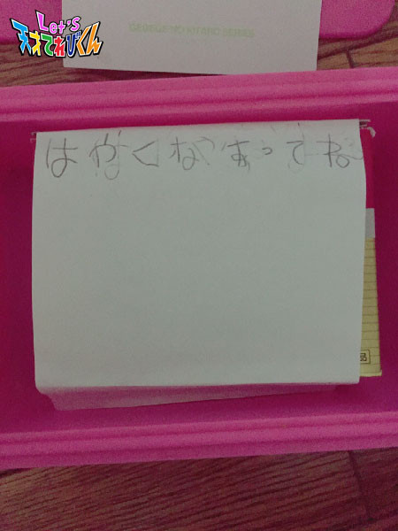
すごくうれしくて、本当に頭が痛くなくなったんです。
愛のちからはすごいです。
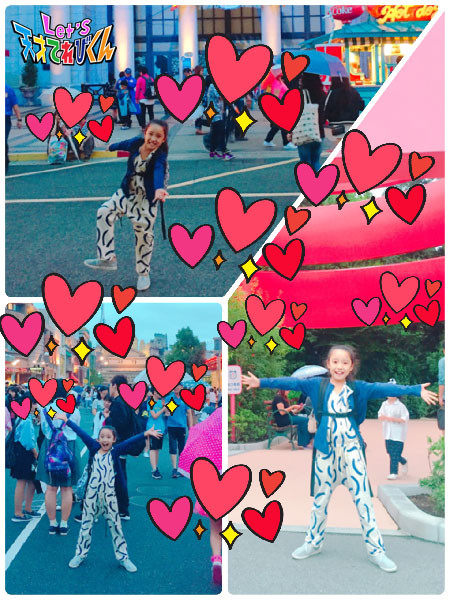
たくさんの愛
ありがとう
投稿者:稲垣芽生 | 投稿時間:18時54分 | カテゴリ：てれび戦士 | 固定リンク
好きな漢字［柿澤仁誠］
こんにちは。
にまです (＾o＾)
もうすっかり秋になって、
すず虫のなき声が聞こえてます！
今回のテーマは「 好きな漢字 」です。
ぼくは“ 楽 ”がいいなと思いました。
楽しいことといえば！
てれび戦士の仲間と会ってから１年もたってないのに、
すごく仲良くなって、いつも楽しくてハッピーなんです ＼(＾O＾)／
みんなでいると、よすがんをとられてしまったときも
少しは楽“ ラク ”になります。
楽という漢字は、
くさかんむりをつけると“ 薬 ”になります！
まほうみたいな漢字だね
ではまた (^^)/~~~
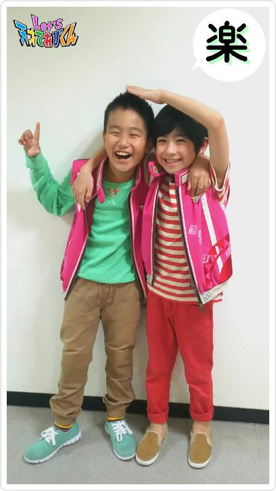
投稿者:柿澤仁誠 | 投稿時間:18時45分 | カテゴリ：てれび戦士 | 固定リンク
好きな漢字［原田明莉］
こーーんにちわ！
はーらだあかりです！
最近なんだか提出物に追われてるよーな、、、？
予定を書くメモ帳は宿題欄で
いーーーっぱいです！！！！！
提出物に追われてるよーな？じゃなくて追われてるんです笑
でも１日くらい前にならないと焦らないっていう・・・・・・(^_^)a
改善しなくてはー！！
さーさー
本題に入ります！
今回のテーマは
「 好きな漢字 」
です！！
んーー。
明と莉
自分の名前になっている漢字です！
まず
明
が好きな理由は
単純に「 あかるい 」ということが好きだからかな
なんかこの字を見ると励まされるんです！
莉
という字が好きな理由は
ジャスミンというお花を意味する漢字なんです！
ジャスミンは人を和ませるんですってー
その話を聞いてからこの字を見ると
なんだか
ホッ
とするようになりました！
この２つで
私の名前になります
私の好きな漢字は明と莉です！
だから自分の名前が大好きだーーー！！
つけてくれた人に感謝、感謝
ですね ^ ^
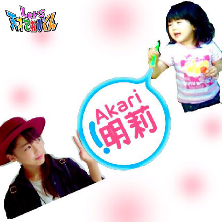
みなさんの好きな漢字はなんですかーー？
投稿者:原田明莉 | 投稿時間:18時45分 | カテゴリ：てれび戦士 | 固定リンク
好きな漢字［辻晴仁］
こんにちは
つじはるとです♪
９月は雨が多かったですね。
雨が続いたので、外でまったく遊べなくて、
虫を探したりもできなくて、気持ちがどんよりとしてしまいました。
あまりにどんよりしてたえられなくなって、
大雨の中、公園にお魚を探しに行ったりしました。
そしてこの間、ひさしぶりにやっと晴れました。
そのひさしぶりの晴れ間に、
地いきの子ども会の集まりで、自然公園に行きました。
森の中で、◯（ まる ）や☆（ 星形 ）や□（ 四角 ）、うずまき、ギザギザ、ハート、
いろいろな形の自然のものを探すというネイチャーゲームをしたり、
“ バットアンドモス ”という、
目かくしをしたコウモリ役の子が、ガの役の子の声をたよりにつかまえるという、
すごくおもしろいゲームをしたりしました。
青空の下でみんなでお弁当も食べました。
きれいなヒガンバナもたくさんさいていて、きれいでした。
雨上がりの青空と、緑のにおい、
そのなかで思いきり遊んで、とてもきもちがいい１日でした。
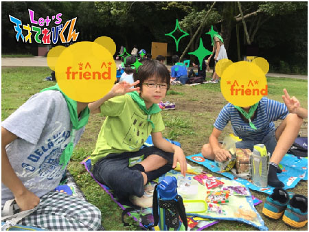
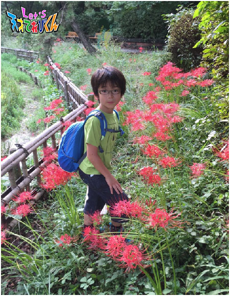
さて、今回のテーマは、「 好きな漢字 」です。
今も書いたように、晴れの日が好きなぼくは、
「 晴 」
という漢字が大好きです。
自分の名前の漢字でもあるしね！
晴れると、いきものも生き生きとたくさん出てくるし、
外で走り回って遊べるし、わくわく１日をすごすことができます♪
晴れるといいことがいっぱい♪
運動会やお外のイベントのある日などに、少しも雲がない青空が広がっていると、
清々しい気持ちになります。
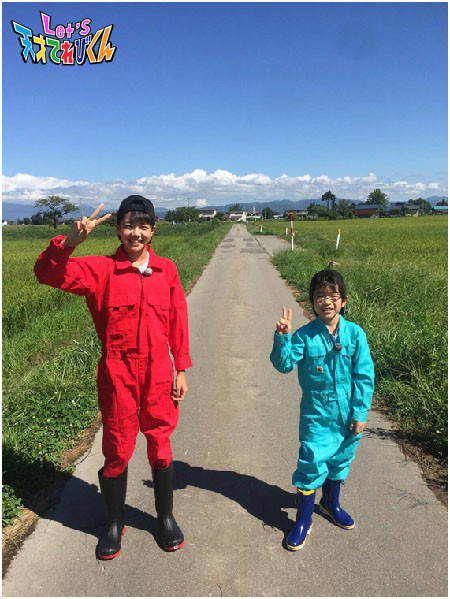
山形どちゃもん・だまちゃだめを探しに行ったとき、
こんなにきれいな青空が広がったよ～～
では、またね (^o^)/
投稿者:辻晴仁 | 投稿時間:18時45分 | カテゴリ：てれび戦士 | 固定リンク
好きな漢字［林武尊］
こんにちは、林武尊です。
もう秋ですね～
秋といえば、食欲の秋！！
僕は魚が好きなので、おいしいサンマを塩焼きにして食べたいです。
あと、ハロウィーンももうすぐですね。
今度は、こういう仮装にしようかな～
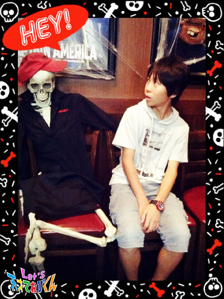
では、本題へ。
今回は、“ 好きな漢字 （ ひと文字 ）”ですね。
僕が“ 好きな漢字 ”は・・・
自分の名前、“ 武尊 ” です。
この字は“ 武を尊ぶ ”と書きます。
この名前を見て、理科の先生に
「 お前、ケンカ強そうだよね 」 と言われました。
ちょっとうれしかったです。
他にも、僕のひいおじいちゃんが“ 武一 ”という名前で、
ひいおじいちゃんを尊敬しているという意味でもあります。
なので“ 武尊 ”という字は、
僕にとって好きな字でもあり、大事な字でもあるんです。
でも今回は、好きな漢字「 ひと文字 」ということで、
どっちか選ぶの難しいな・・・
ひいおじいちゃんと同じ“ 武 ”にしようかな！
あと“ 凸凹 ”（ でこぼこ ）という字。
記号みたいで面白いですよね～
皆さんはどんな漢字が好きですか？
投稿者:林武尊 | 投稿時間:18時45分 | カテゴリ：てれび戦士 | 固定リンク
好きな漢字［皆川寧々］
みっなさ～ん、
こんばんは、＊寧々＊です (｡・u・｡)/☆
＊最近の出来事＊
私の学校は秋運動会なのですが。。。
今年は小学校生活最後だから、
組体操、騎馬戦etc・・・
いろいろ頑張りたいと思ってます |ω･`)y”
昨年は、応援団に入り旗手に立候補して、
重い旗を持ち校庭をひたすら走りました・・・(o´Д`)/◇
今年ももちろん応援団に入りました！
オーディションで念願の団長に選ばれました。
団長はお腹の底から声をだそうとすると、
声が裏返ったりして、意外と難しいんです。。。笑笑
歴代団長の名前が刻まれたハチマキを手渡されたときは、すごく緊張しました。
本番は声がかれるまで、応援頑張ります (●・u・●)
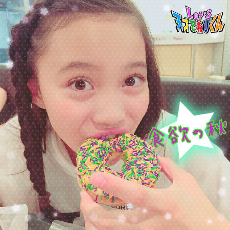
今回のテーマ！
【 好きな漢字 】
やっぱり好きな漢字は、寧々の｢ 寧 ｣です！
この漢字は、｢ やすらか ｣、｢ 丁寧（ ていねい ）｣などの意味があるのですが、
おおざっぱな私とは正反対・・・(´；ω；｀)
でも、この漢字を書いてると
なぜだか落ち着くんです。
落ち着くというか、ほっとするんです。
この漢字だけは、なんとなくキレイに書かなくてはいけない気がして、
テストのときでも何度も書き直しちゃうんです・・・笑笑
｢ 真っ直ぐで、丁寧で、やすらかな大人 ｣
になっていきたいなぁと将来への希望もこめて。。。
親につけてもらった名前を大切に丁寧に成長したいなぁと、
これからも名前を書くたびに思います。
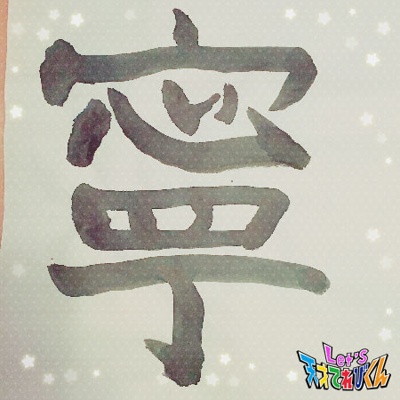
みんなはどんな漢字が好きですか？
Let's 好きな漢字
それでは＊寧々＊でした♪
投稿者:皆川寧々 | 投稿時間:18時54分 | カテゴリ：てれび戦士 | 固定リンク
好きな漢字［小澤竜心］
こんにちは！竜心です。
ぼくの好きな漢字は、【 鑑 】です。
ずっと前のブログに書いたんですが、
歌舞伎の演目で、よくみるので好きになりました！
好きな理由は・・・。
まず、この漢字の形が、
四角っぽくてどっしりしているところが、
男らしくてかっこいいです！
漢字辞典で意味を調べたら、
『 かんがみる。みきわめる。よくみて、本当のところをかんがえる。』
『 手本。かがみ。照らし合わせてみるもの。』
いろんなことをよ～くみて、
本当はどうなんだろう？ってよ～く考えて、
みきわめるって、大事！
意味が深いなぁ～って思いました。
ぼくも将来、
【 鑑（ かがみ ）になる 】ような人に、
なれるようにがんばります p(^-^)q
小さい頃からいつもお母さんが、
「 漢字は昔の人が一生懸命考えて作ったんだよー。」
って言うので、ちゃんと覚えなくちゃって思います。
意味を調べると覚えやすくて、
難しい漢字も、パズルみたいで面白いです♪
これからも、いろいろな漢字を調べたいな～。
そして、漢字博士とよばれたいです！ (￣-￣)ゞ
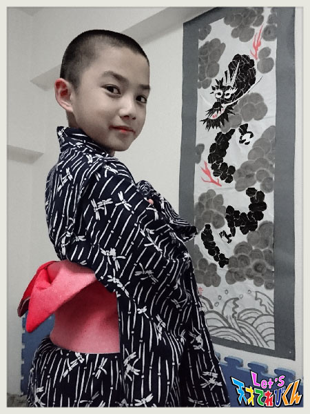
今、ぼくは日本舞踊で、
『 春興鏡獅子（ しゅんきょうかがみじし ）』の
『 胡蝶の精（ こちょうのせい ）』に挑戦しています。
このかがみは、【 鏡 】です！
秋の舞台に向かって、お稽古（ けいこ ）がんばります。
投稿者:小澤竜心 | 投稿時間:18時45分 | カテゴリ：てれび戦士 | 固定リンク
好きな漢字［稲垣芽生］
こんにちは～
わたしは最近、家族で大阪に旅行に行ってきました。
串カツにフグに豚まんにタコ焼きに・・・
おいしいものがたくさんでした。
お父さんが行きたかった
通天閣にもいきました。
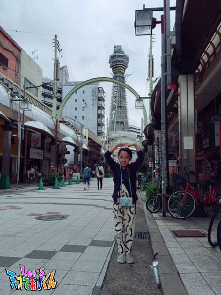
１つ不思議だなぁ。なんだろうなぁ。
と思ったことがありました・・・。
この写真みてください！
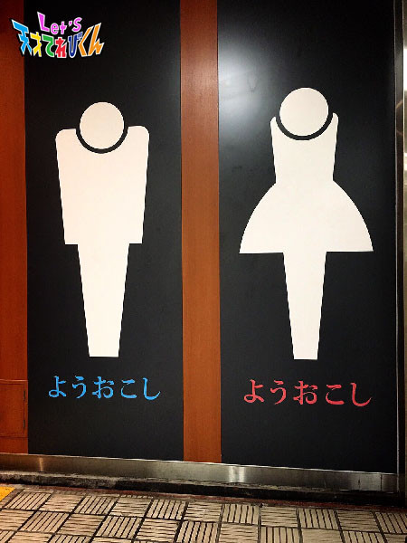
「 ようおこし 」ってなんですか？
男の子と女の子の両方ともに書いてあるのです・・・
なんでしょう？
わかる方教えてください。
では本題〔 好きな漢字 〕です。
それは生きるの「 生 」です。
私の名前は「 芽生 」と書いて「 生 」が入っています。
両親が私の名前を付けてくれるときに
「 生きる 」という漢字を名前に入れてくれました。
生命がみなぎっている強いイメージと
「 どんなことがあったとしても生きて生きて生き抜いてほしい 」
そんな思いがあるそうです。
名前の由来を手紙で書いてくれて
読んだときに涙が止まりませんでした。
それから
自分の名前と「 生きる 」の漢字が大好きなんです。
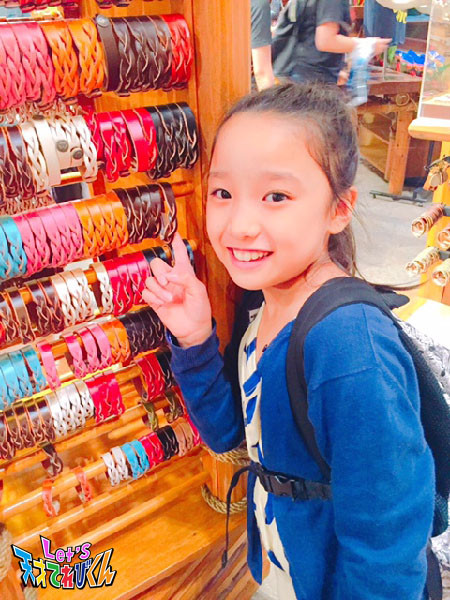
稲垣芽生。
投稿者:稲垣芽生 | 投稿時間:18時45分 | カテゴリ：てれび戦士 | 固定リンク
「キスミーきれいみー」のミュージック・ビデオをお楽しみなさい！［超次元帝国清掃課地球係］
超次元帝国のスーパーアイドル・ぱぺらぴ子ちゃんが歌う「キスミーきれいみー」。
そのミュージック・ビデオを大大大大大公開！
地球人のみなさん、愛らしい歌声とキュートな姿を今すぐチェックするのよ～！
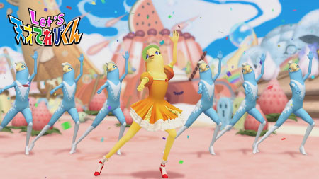
ちなみに「Let’s天才てれびくん」の番組ホームページ以外でも見ることができるわよ！
オーホホホホホホ～！
■NHKどーがステーション
http://www3.nhk.or.jp/d-station/episode/tvkun/6233/
■YouTube
https://youtu.be/RYuEemuRTC8
※ＮＨＫサイトを離れます
■ニコニコ動画
http://www.nicovideo.jp/watch/1475659806
※ＮＨＫサイトを離れます
そうそう、しばらくしたらGYAOでも見られるようになる予定よ～。
超次元帝国清掃課地球係 係長 松永天馬より
投稿者:超次元帝国清掃課地球係 | 投稿時間:18時45分 | カテゴリ：その他 | 固定リンク
好きな漢字［飯島緋梨］
こんにちは！
飯島緋梨です！
最近、夜になると秋の虫！
コオロギや鈴虫の声が聞こえてきます！
いやされる～♪
寝るときもその声が聞こえてきて、
いつもよりすぐ寝れることが多いです！
自然のBGM・・・いい感じ！
さてさて！
今回のお題は
「 私の好きな漢字 」です！
私が好きな漢字は「 飯 」という字です！
なぜかというと、
ご飯が好きだから（＾Ｏ＾）
そしてそして、私の名字が「 飯島 」だからです！
飯島という名前はご飯のはん、島のしまと書いて飯島（ いいじま ）と読みます！
ご飯の島・・・なんだかおいしそうな名字だ (^o^)
この飯という漢字は
音読みだと、
ハン
訓読みだと、
めし、いい
なんだって！
ハンさんがいいめしを食べる！アハハハ！
「 緋梨 」は、緋色の緋と梨？
どこかにありそうな幻の梨だ～(^^)
１つの漢字の音読みと訓読みで
いろいろな物語ができちゃいそう！笑
でもでもやっぱり！
みんなで一緒に食べるご飯は楽しい *\(^o^)/*
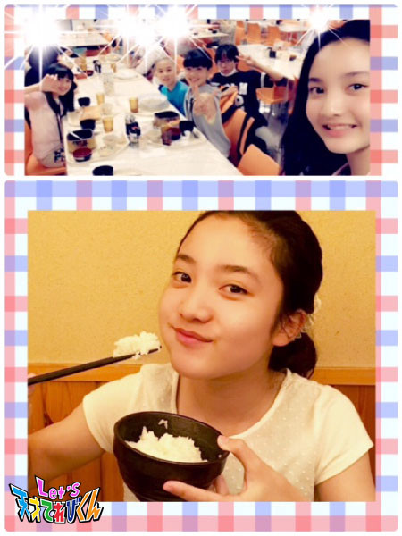
投稿者:飯島緋梨 | 投稿時間:18時45分 | カテゴリ：てれび戦士 | 固定リンク
好きな漢字［黒川桃花］
皆さんこんにちは。黒川桃花です。
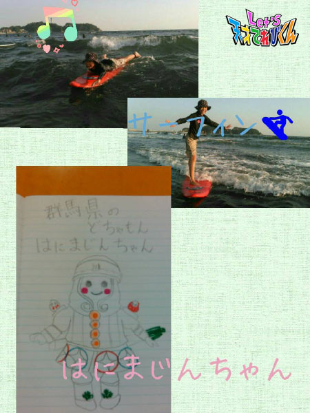
スポーツの秋 ： この間サーフィンしてきましたよ！
芸術の秋 ： 大好きな群馬どちゃもん・はにまじんちゃんを描いてみました！
みなさんはどんな秋をお過ごしですか？？
さて、今回のお題は「 好きな漢字 」です。
私の好きな漢字
やっぱり「 桃 」です！！
私の名前に入っている、とても大好きな漢字です。
私は、ママとパパがつけてくれた名前が大好きです。
「 桃 」の形がかわいいし、
「 桃 」の花言葉には［ チャーミング ］もあるんだそうです。
チャーミングな女の子になってほしい！
と思ってつけてくれたそうなのですが、、、、、、(^_^;)
チャーミングになれるよう頑張ります (^_^)/
形も花言葉も「 桃 」が大好き！！
皆さんの好きな漢字は何ですか？？？
投稿者:黒川桃花 | 投稿時間:18時45分 | カテゴリ：てれび戦士 | 固定リンク
好きな漢字［桐畑カレン］
こんにちは。
カレンです (*^^*)
♪12才になりました♪
今年も周りの方々にたくさんお祝いしていただきました (*´∀｀*)
ありがとうございます♪
ちょっとお行儀悪いけど・・・
ホールのケーキをそのまま食べるという夢をかなえてもらいました。
ちなみにケーキは小さめですよ～。
え？全部１人で食べられたか？？
それは内緒です (￣ー￣)
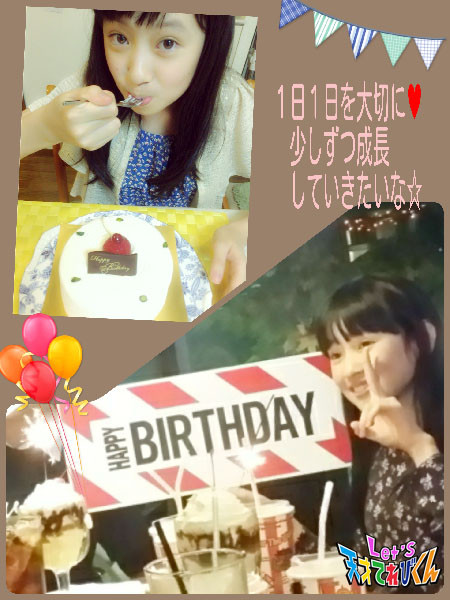
☆。.:＊・゜☆。.:＊・゜☆。.
漢字は見ない日も書かない日もないですよね。
私の場合、「 しんにょう 」が上手にかけたら、
おお～ってうれしくなります。
漢字の成りたちを見ると想像どおりのものや、
えっ！？そこからきたの？
と思うものまであって、面白いです。
私はカレンという自分の名前は大好きだけど、
漢字の名前がよかったなーって思ったときがあったんです。
自分でこんな漢字でカレンってどうかな～と考えてみたり (^^)
☆ その時期の母との会話 ☆
カ「 ねー、なんで漢字の名前にしなかったの？ 」
母「 どうしてカタカナでカレンになったかというとね（ 長いから省略 ）だからだよ。」
カ「 知ってるけど、漢字もあこがれるな～。」
・・・・・・10秒後くらい・・・・・・
母「 漢字入ってるじゃない！」
カ「 ( ・◇・)？？ 」
・・・・・・５秒後くらい・・・・・・
カ「 リキレンちゃんになるじゃーん!！ 」
分かりましたか？
お母さんはカタカナの「 カ 」を漢字の「 力 」に当てはめたんです。
母「ちから（ 力 ）だよ。パワーだよ。パワーがわいてくる感じがするじゃん p(^^)q」
カ「・・・・・・ぷぷぷ (^w^)そうだねー。リキレンちゃんもいいね。」
それ以来、なんだか「 力 」という漢字が気になってます。
「 力 」って、力強いとか力いっぱいとか、
元気になれそうな言葉がたくさんあっていいなって思います。
好きな漢字＝気になる漢字＝力
私はこんな“ かんじ ”かな。
↑ ↑ ↑
だじゃれです( °∇^)］
（“ 漢字 ”と“ 感じ ”）
投稿者:桐畑カレン | 投稿時間:18時54分 | カテゴリ：てれび戦士 | 固定リンク
好きな漢字［久保みのり］
こんにちは ( ´ ▽ ` )ﾉ
みのりです！！
夜になるとすごくすずしくて、虫の声が聞こえてきます。秋だなぁ～。
秋といえば・・・
先日わたしは、おたん生日がきて、、
てんさい になりました～～っ！
あ、10さいでした (^○^)
第５やたがらす丸でも、
９月生まれのスタッフさん、カレンちゃんといっしょにおいわいしてもらえて、
とっ～てもうれしかったです♪( ´▽｀)
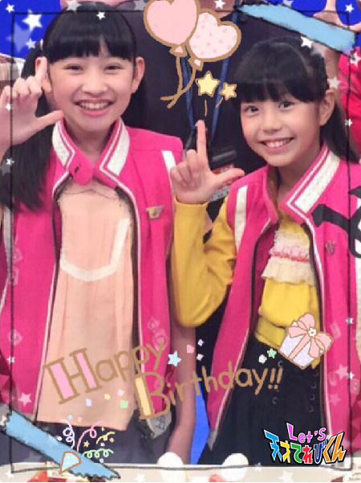
＊.｡.:*・ﾟ ＊.｡.:*・ﾟ ＊.｡.:*・ﾟ ＊.｡.:*・ﾟ ＊.｡.:
今回のテーマは『 好きな漢字 』
わたしは、習字を習っているので
一文字ずつていねいに、心を落ちつけて字を書くことが好きです。
４年生までにいろいろな漢字を習ってきて、まよったけど、わたしが選んだ漢字は、、、
『 実 』です！
私の名前はみのりです。
実りの秋に生まれて、実り多い人生を送ってほしいと願って
お父さんとお母さんがつけてくれました。
（ママもお姉ちゃんも名前はひらがななので、私もひらがなです ^ ^）
それから、『 実 』という漢字を漢字辞書で調べてみると、
ど力してよい結果を得ること、とあります。
うん！とってもいい意味ですよね！！
勉強も、運動も、第５やたがらす丸でもがんばって、
たくさんの実を実らせます！！
まずは、じいじのおうちでひろった「 実り 」を食べちゃいました^ ^
と～ってもおいしかったです (*^^*)
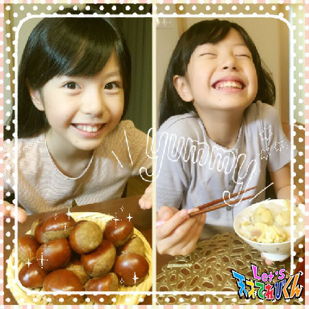
投稿者:久保みのり | 投稿時間:18時45分 | カテゴリ：てれび戦士 | 固定リンク
好きな漢字［瀧澤翼］
こんにちは～！
瀧澤翼です！
三重県の赤目四十八滝に行ったら、
なんと僕と同じニックネームのキャラクターがいたんです！！
その名も・・・タッキー！
すごくびっくりしましたが、
かわいかったので思わず写真を撮っちゃいました（≧∇≦）
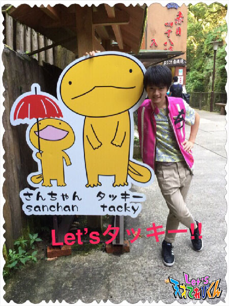
さぁ、今回のテーマは「 好きな漢字 」ですね。
僕の好きな漢字は、「 勝 」です。
この漢字は、ご存知「 勝つ 」や「 勝利 」など、
何かに勝つときに使う漢字ですよね。
なぜこの漢字が好きなのかというと、
いろんなことに勝ちたいからです！！
いろんな行事ごと、勝負ごとに勝つことで、
自分の自信につなげていけるからです。
この字を書いてるとテンションが上がってくる感じがするんです *\(^o^)/*
今、僕が勝ちたいことは、
学校の合唱コンクールで全クラスに勝ち、最優秀賞をとることです！！
Let's “ 勝 ”
投稿者:瀧澤翼 | 投稿時間:18時45分 | カテゴリ：てれび戦士 | 固定リンク
好きな漢字［胡内奏芽］
こんにちは！
胡内です。
今回のテーマは「 好きな漢字 」です。
ぼくの好きな漢字は、ズバリ
「 協 」です！！！
理由は、「 協 」って字は、
“ 人の力を集めて、プラスする ”と書いてあるように見えます。
その組み合わせが、とても素敵な漢字だと思うからです！！
それと、全体的にまとまってる（ 四角い感じ？の ）形も好きです。
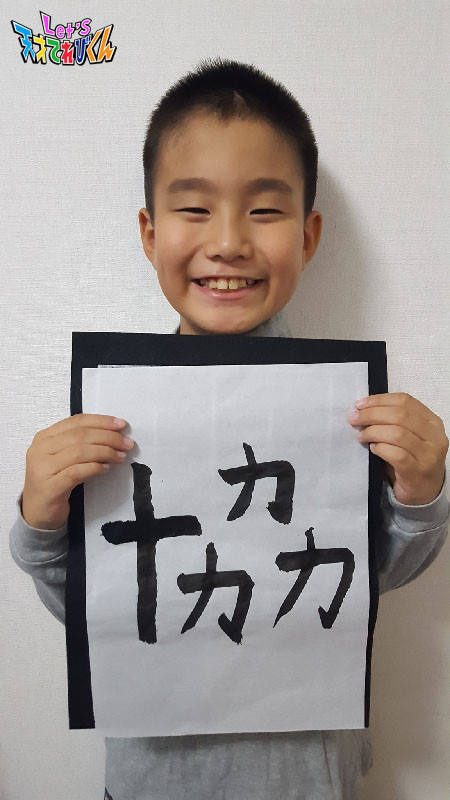
しかも、「 協 」に、また「 力 」をたしたら、「 協力 」ですよ？
「 協力 」って言葉もすごく好きです (*^^*)
漢字って、今までなんとなく覚えてたけど、
これからは一つ一つ組み合わせもちゃんと見て、
楽しみながら覚えようと思います！！！
投稿者:胡内奏芽 | 投稿時間:18時45分 | カテゴリ：てれび戦士 | 固定リンク
ページの一番上へ▲